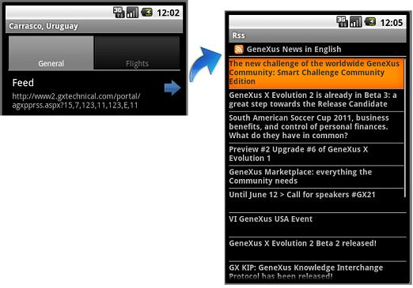

Note: Feed Domain is deprecated as from GeneXus X Evolution 2 Upgrade 2 This domain is used to display RSS content from a specific URL. Enter a URL to display its associated RSS content. In Edit mode, the information is entered as text using the platform’s input method.  The Feed domain type is based on the Url domain: VarChar(1000).
|
| Backlinks |
| Category:Domains with Special Semantics |